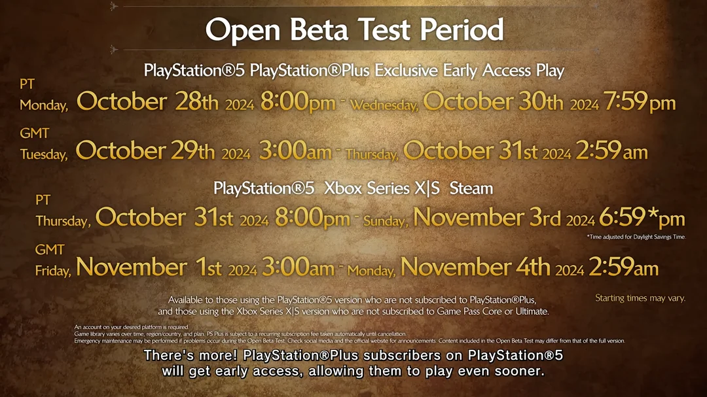

Latest News!
Monster Hunter Wilds will be having an Open Beta Test staring on the 28th (29th GMT) of October, 2024 for Playstation Plus members. The Beta will start on the 31st (1st November GMT) for all other means of play.
Latest Video
The latest video for Monster Hunter Wilds was "The Black Flame", covering a new locale and three new monsters. We also seemed to have noticed that the Sword and Shield being used by the Hunter was larger than normal, a mechanic previously only seen in Frontier. Time will tell if Weapon Length will make a return, or if it was simply a model with a larger sword.